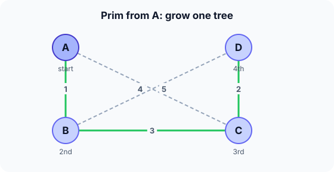

Prerequisites
- Kruskal's algorithm and minimum spanning trees.
- Dijkstra: Prim has the same structure.
- Priority queue.
The analogy
Everyday analogy
Imagine a mould spreading from one spot. Each day it grows across the cheapest gap from what it already covers, never jumping to a separate patch.
Prim's tree spreads the same way. It keeps, for every vertex outside the tree, the cheapest edge connecting it to the tree, and always attaches the vertex with the cheapest such edge.
How it works
Precondition: an undirected, connected, weighted graph. Negative weights are fine.
Start with one run by hand
Start at A. key[v] is the cheapest edge from the tree to v (∞ if none). Each round, add the outside vertex with the smallest key and update its neighbours' keys. Predict, then open "Check".
Example: predict before you read
Step 1. Add A. Predict the keys of B, C, D.
Check
key[B] = 1, key[C] = 4, key[D] = ∞ (A has no edge to D).
Step 2. Cover the next line and guess: which vertex is added next, and which keys change?
Check
B (key 1). Through B: key[C] = min(4, 3) = 3 and key[D] = min(∞, 5) = 5.
Step 3. Add the next vertices. Predict the order and the total weight.
Check
C (key 3), which lowers key[D] to 2; then D (key 2). Order A, B, C, D; total 1 + 3 + 2 = 6.

Quick recall: Before reading further, cover the text above and say out loud: what does key[v] store?
Check your answer
The weight of the cheapest edge connecting v to the current tree, or ∞ if there is none yet.
Finish the picture: a different start
Run Prim again starting from D.
- The first two additions. Predict them.
Check
From D: C (2) is cheapest. From {D, C}: B (3), since key[A] is 4 via C.
- The last addition and total. Predict both.
Check
A joins via B (1). Edges C–D, B–C, A–B: total 6 again. The start changes the order, not the tree here.
Quick recall: Without scrolling up, say out loud: how is Prim different from Kruskal?
Check your answer
Prim grows one connected tree from a start vertex; Kruskal merges many small groups in global edge order.
The rule in plain words
Start with any vertex in the tree. Set key of each vertex to its edge weight to the tree (∞ if none).
Repeat $V - 1$ times: add the outside vertex with the smallest key, then lower its neighbours' keys where its edges are cheaper.
Quick recall: Before you read the code, write one round of Prim in your own words. Then check below.
Check your answer
1. Pick the outside vertex with the smallest key. 2. Add it to the tree and add its key to the total. 3. For each neighbour still outside, lower its key if this new edge is cheaper.
The code
Read this code after you have done the run by hand. It will make more sense.
int prim(int w[][4], int n) { /* w = 0: no edge; returns MST weight */
int key[100];
int in_tree[100];
int total = 0;
for (int i = 0; i < n; i++) { key[i] = i == 0 ? 0 : INT_MAX; in_tree[i] = 0; } /* start at 0 */
for (int round = 0; round < n; round++) {
int u = -1;
for (int i = 0; i < n; i++) /* cheapest edge into the tree */
if (!in_tree[i] && (u == -1 || key[i] < key[u])) u = i;
in_tree[u] = 1; total += key[u];
for (int v = 0; v < n; v++) /* u's edges may be cheaper now */
if (w[u][v] && !in_tree[v] && w[u][v] < key[v]) key[v] = w[u][v];
}
return total;
}Definition
What you just did, in one line: Prim's algorithm builds a minimum spanning tree by growing one tree from a start vertex, always adding the cheapest edge that connects the tree to a new vertex.
flowchart TD
A["tree = start vertex"] --> B["pick the outside vertex with the smallest key"]
B --> C["add it and its key edge to the tree"]
C --> D["lower the keys of its outside neighbours"]
D --> E{"all vertices in the tree?"}
E -->|no| B
E -->|yes| F["done: minimum spanning tree"]
How fast is it?
Quick recall: Before looking at the formula, predict: how does Prim's code compare with Dijkstra's?
Check your answer
Almost identical. The only change: the key is the single edge weight to the tree, not the total distance from the start.
The array version scans all vertices each round; the heap version pays $\log V$ per key update:
$$O(V^2) \text{ (array)}, \qquad O\big((V + E) \log V\big) \text{ (binary heap)}$$On a dense graph, $E \approx V^2$, so the simple array version is the better choice.
| Version | Time | Best for |
|---|---|---|
| Array scan (code above) | $O(V^2)$ | Dense graphs, adjacency matrix |
| Binary heap | $O((V + E) \log V)$ | Sparse graphs, adjacency lists |
| Extra space | $O(V)$ | Keys and in-tree flags |
Warning
Don't confuse Prim with Dijkstra. Dijkstra's key is the total distance from the start (dist[u] + w); Prim's key is just the single edge weight w. Using Dijkstra's rule gives a shortest-path tree, which is not the minimum spanning tree in general.
Exam tip
Exams often ask for the key table after each round, like Dijkstra's. Remember the update is key[v] = min(key[v], w(u, v)).
Common mistakes
- Updating keys with
key[u] + was in Dijkstra. - Updating vertices already in the tree.
- Choosing the cheapest edge anywhere in the graph, which is Kruskal, instead of the cheapest edge leaving the tree.
Try it yourself
Exercise 1 (warm-up)
Edges P–Q 2, Q–R 2, P–R 3, R–S 1. Run Prim from P: give the order in which vertices are added.
Hint
From P, compare P–Q (2) with P–R (3).
Answer
P, Q (2), R (2, via Q), S (1, via R). Total 5.
Exercise 2 (a bit harder)
Graph: S–A 1, S–B 4, A–B 2, B–C 1. Compare the shortest-path tree from S (Dijkstra) with the minimum spanning tree (Prim). Are they the same? Write your answer down before you open it.
Show answer
Dijkstra: dist A = 1, B = 3 (via A), C = 4, tree S–A, A–B, B–C. Prim from S: A (1), B (2 via A), C (1): same tree here, total 4. They differ in other graphs, e.g. a triangle S–A 2, S–B 2, A–B 1: Dijkstra keeps S–A and S–B (total 4), Prim keeps S–A and A–B (total 3).
Did you know?
Did you know?
Prim's algorithm was first found by the Czech mathematician Vojtěch Jarník in 1930, then rediscovered by Robert Prim (1957) and Edsger Dijkstra (1959).
Jarník's motivation was an electricity network in Moravia: connecting towns with the least total wire.
Key points to remember
If you remember one thing from each line, remember the because.
- Prim always adds the cheapest edge leaving the tree because that edge is safe to include in a minimum spanning tree.
- It keeps one connected tree because every new vertex attaches to the existing tree.
- The array version is $O(V^2)$ because each of $V$ rounds scans all vertices for the smallest key.
- It differs from Dijkstra because its key is one edge weight, not a total distance.
- Any start vertex works because every vertex must be in the spanning tree anyway.
Self-check questions
Answer these in order, out loud. They follow the page, so your answers become the script of your video.
- How is Prim's algorithm like mould spreading?
Sample answer
It grows from one spot, each time covering the cheapest gap next to what it already covers, never starting a separate patch.
- Walk through Prim from A on A–B 1, C–D 2, B–C 3, A–C 4, B–D 5.
Sample answer
Add A; then B (key 1); then C (key 3 via B); then D (key 2 via C). Total 6.
- Why does the code compare
w[u][v] < key[v]and notkey[u] + w[u][v] < key[v]?A good answer says what the key means.
Sample answer
The key is the cost of the single edge that would attach v to the tree, not a path length. Adding key[u] would turn the algorithm into Dijkstra.
- So what is Prim's algorithm, in one sentence?
Sample answer
It builds a minimum spanning tree by growing one tree from a start vertex, always adding the cheapest edge to a new vertex.
- Why does starting from a different vertex still give a minimum spanning tree?
Sample answer
Every vertex ends up in the tree, and at every step the cheapest edge leaving the current tree is safe, whatever the tree started from.
- What are Prim's array and heap costs?
Sample answer
Array: $O(V^2)$. Binary heap: $O((V + E) \log V)$. $O(V)$ extra space.
- Why can a shortest-path tree differ from a minimum spanning tree?
A good answer uses the triangle S–A 2, S–B 2, A–B 1.
Sample answer
Shortest paths from S keep S–A and S–B (each distance 2), total 4. The MST only needs S–A and A–B, total 3. One minimises distance from S, the other total edge weight.
- If you had to teach this to a friend in 2 minutes, what would you leave out, and why?
Sample answer
I'd leave out the heap analysis and the history. I'd keep the mould analogy, the run from A, and "cheapest edge leaving the tree, like Dijkstra but with edge weights, $O(V^2)$ or $O(E \log V)$".
External resources
- VisuAlgo: Minimum spanning tree: run Prim from any start vertex.
- GeeksforGeeks: Prim's algorithm: array and heap versions.
- Wikipedia: Prim's algorithm: history and complexity.
Videos
- YouTube search: Prim's algorithm: pick a walkthrough with the key table.